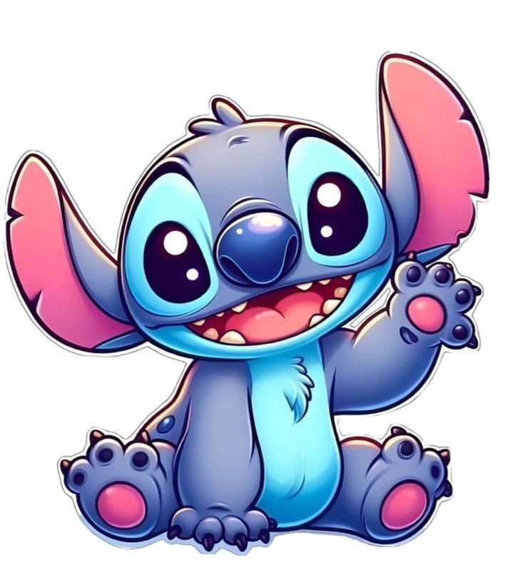

OHANA MEANS FAMILY

a tiny reminder for today
Hi, Nadya
Hari pertama memang kadang nggak bersahabat, ya? Jadi, hari ini kamu nggak harus melakukan semuanya. Pelan-pelan aja, sayang.
PMS DAY ONE · SOFT MODE ON
✦
♡
✦
Tell Stitch, how are you?
Pilih yang paling menggambarkan perasaanmu sekarang.
Little things for you
Nggak harus semuanya. Pilih yang kamu butuhkan aja.
Laskar Pelangi Music
Putar kalau kamu mau, ya.
a soft little corner on the internet ☁